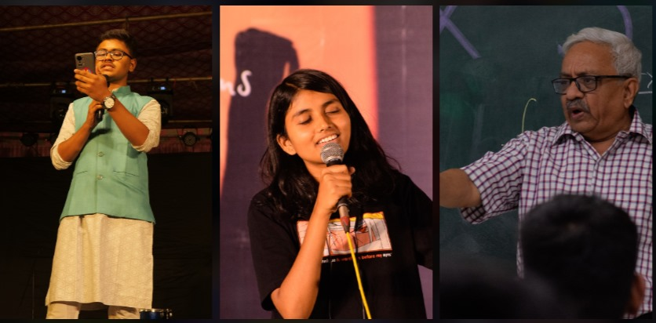
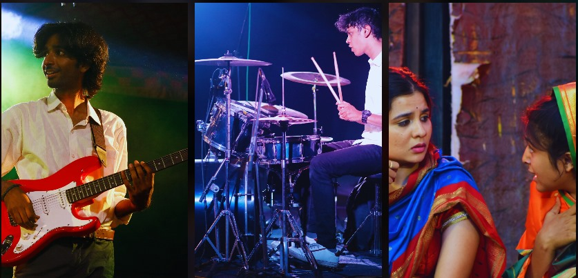
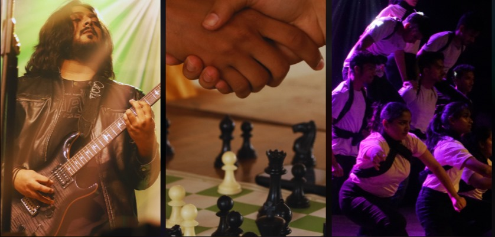

VIT Melange 2023
Mélange is the epitome of the festive season at VIT.
Packed with four energetic days, it serves as our flagship event,
inviting participants from all corners of the country.
This unparalleled gala encompasses a diverse range of activities,
from picking your brains at hackathons and Robo-games,
to participating in debates and auctions that put your analytical
skills to the test, to even pushing your physical capabilities in various sports competitions.
VISHWOTSAV
Vishwotsav, an esteemed tradition of VIT
continues to shine as an unconventional escapade
crafting everlasting memories
Spanning across three days,
this event offers a wide spectrum of captivating events
and engaging activities. It presents innumerous avenues to
Immerse yourself in an enchanting ambiance that envelops the campus.
FRESHERS' PARTY 2023

Freshers' party is a glorious welcoming ceremony organized by EPEC
for our freshmen that marks the exciting beginning of a new academic journey.
With performances that showcase the diverse talents of the students
we set the stage for a memorable college experience.
As reputed clubs of our very own campus coax the newcomers with their legacy,
our freshers step up and announce their arrival
and embrace the exhilarating ride that awaits them.
VISHWAKARANDAK 2023
Welcome to Vishwakarandak – a four-day whirlwind
that ignites the campus of VIT, Pune with a fusion of talent,
camaraderie, and spirited rivalry. This flagship event is
a symphony of competitions spanning sports, literature, technical feats,
arts, and more, where each department showcases their prowess
while nurturing values of unity. From heart-pounding contests to awe-inspiring
performances,Vishwakarandak is a carnival of passion and dedication.